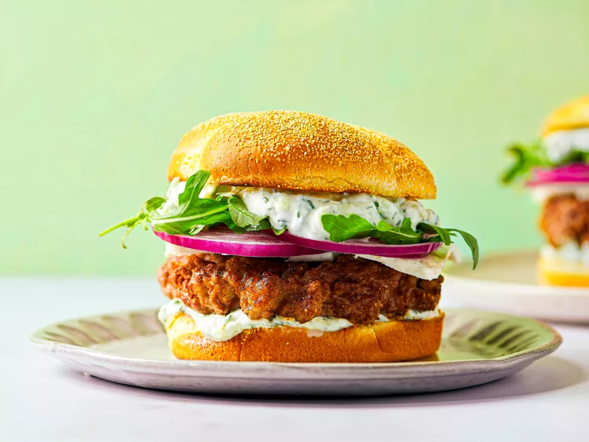

The Best Lamb Burger Recipe

Description
Lamb burgers are like the Super Mario Bros. 2 of the burger world. They're kind of strange and funky and it's not entirely clear how they fit into the canon of their brethren, but they're awesome in their own way, and a great change from the norm. I wouldn't eat a lamb burger every day, but when I do, I want it to be the best damned lamb burger it can be. After grinding and grilling my way through nearly 32 pounds of the stuff, there's a thing or two I learned about the process.
Ingredients
- 2 pounds lamb chuck cut into 1-2 inch cubes
- Kosher salt and freshly ground pepper
- 4 hearty burger buns
- Condiments as desired
Directions
- To Grind With a Meat Grinder: Place feed shaft, blade, and 1/4-inch die of meat grinder in freezer until well-chilled. Meanwhile, place meat chunks on rimmed baking sheet, leaving space between each piece and place in freezer for 10 minutes until meat is firm, but not frozen. Transfer meat to a large bowl and toss to combine. Grind meat and refrigerate immediately until ready for use.
- Transfer meat mixture to a large tray and divide into four piles. Press each pile into a patty about 1/2 an inch wider on all sides than your burger buns, pressing gently until they hold together, but taking care not to overwork them. Form a slight dimple in the center of each patty. Season the top sides will with salt and pepper. Flip patties using a thin flexible spatula and season second side well.
- Light one chimney full of charcoal. When all the charcoal is lit and covered with gray ash, pour out and arrange the coals on one side of the charcoal grate. Set cooking grate in place, cover grill, and allow to preheat for 5 minutes. Alternatively, set half the burners on a gas grill to the highest heat setting, cover, and preheat for 10 minutes. Clean and oil the grilling grate.
- Transfer burgers to hot side of grill and cook, flipping frequently (if burgers are threatening to break or fall apart, reduce the frequency of flipping, even down to a single flip if necessary) and transferring to cooler side if flare-ups occur, until they register 125°F on an instant read thermometer for medium-rare, or 135°F for medium. Transfer to a large plate. And let rest for 2 to 3 minutes. Meanwhile, toast buns over grill.
- Place burgers on buns, top as desired, and serve.